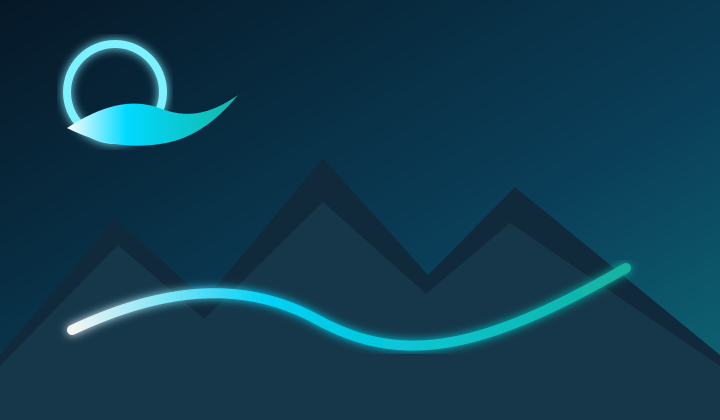
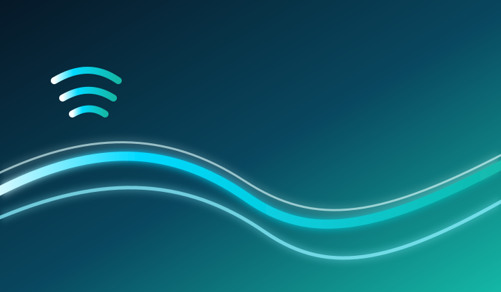

Calme
Peu de bruit, des priorités visuelles nettes et des actions évidentes.

Activez votre identité une fois. Entrez dans un environnement cohérent où navigation, communication, analyse, information et système travaillent ensemble.
Chaque application reste autonome. Quantic ID, la navigation commune et le design system les relient sans mélanger vos données.

Un environnement pensé autour de vos objectifs, de vos outils et de votre identité.
Découvrir
Un Web fluide, portable et protecteur, sans sacrifier le confort d’utilisation.
DécouvrirLire les signaux, relier l’information et transformer la complexité en orientation.
Ouvrir VisionVotre messagerie dans l’écosystème Quantic, accessible sur le Web et destinée au bureau.
Ouvrir MailPersonnes, idées et communautés dans un réseau social conçu pour rester maîtrisable.
Ouvrir PulseUn flux technologique clair pour comprendre ce qui change sans subir le bruit.
Ouvrir NewsQuantic Sillage est conçu autour d’une identité active sur votre appareil. Une Quantic Key ou Quantic Secure fournit la preuve cryptographique. Le site n’a pas besoin de connaître votre secret.
Le design masque la complexité sans la nier : mêmes repères, mêmes composants, mêmes règles de sécurité, avec des données isolées par produit.
Peu de bruit, des priorités visuelles nettes et des actions évidentes.
Des applications autonomes organisées comme une suite cohérente.
L’identité relie les services ; elle ne transforme pas leurs données en pot commun.
Votre environnement doit pouvoir vous suivre plutôt que rester prisonnier d’une machine.
News alimente la compréhension. Pulse permet la conversation. Deux produits distincts, reliés sans devenir la même chose.
Voir Quantic NewsUn point d’entrée commun. Des applications qui restent elles-mêmes.